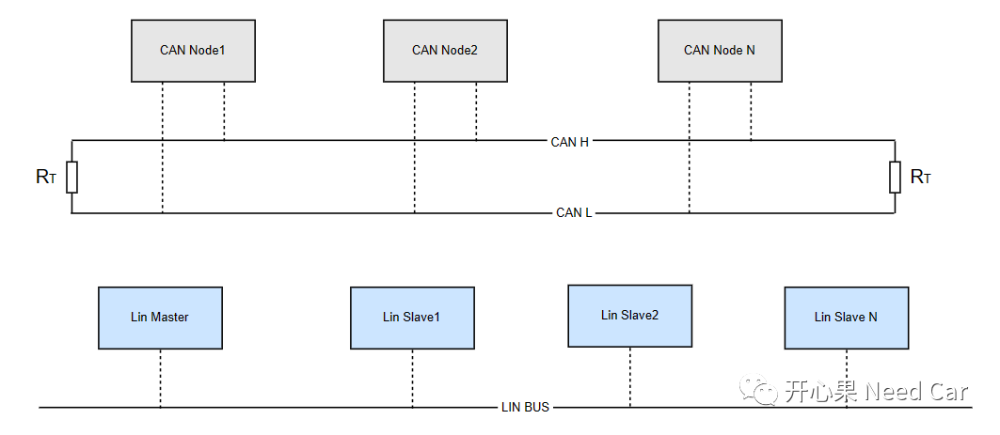
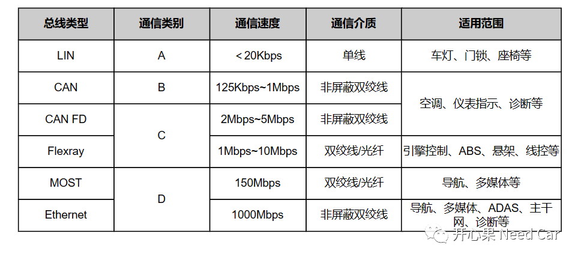
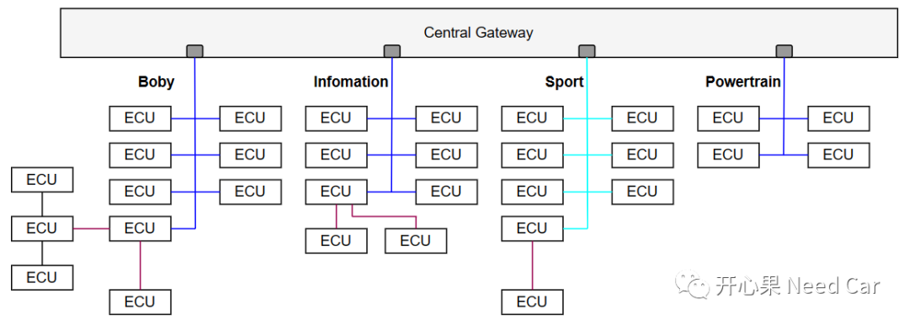
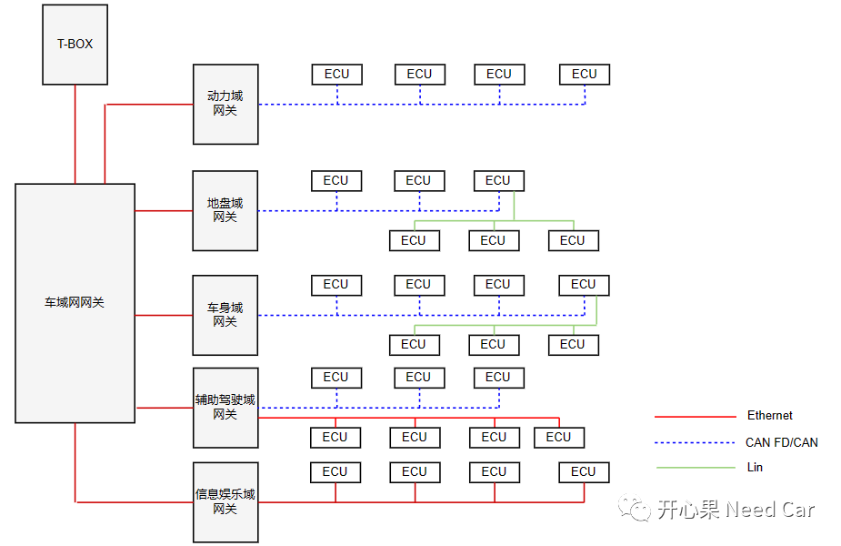
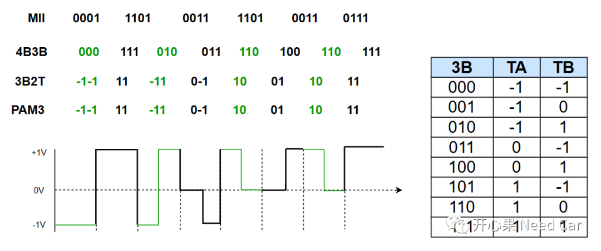
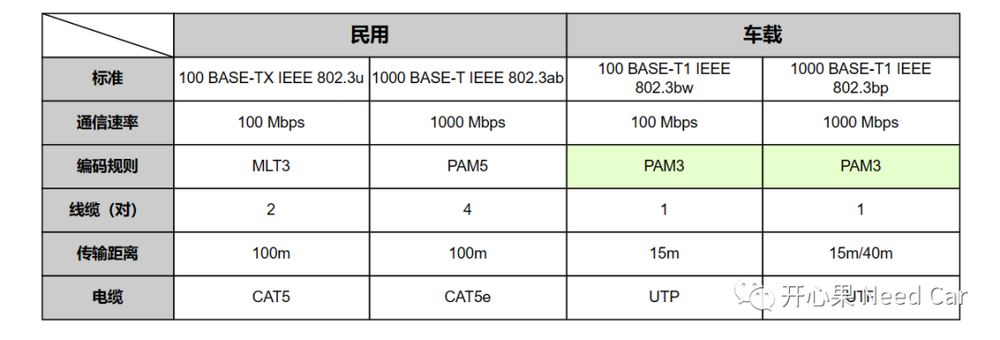
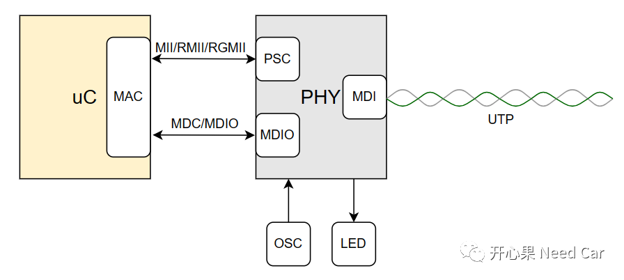

开心果 Need Car · 2023-03-17T10:35:00+08:00 · 微信原文

CmxGraphModel%3E%3Croot%3E%3CmxCell%20id%3D%220%22%2F%3E%3CmxCell%20id%3D%221%22%20parent%3D%220%22%2F%3E%3CmxCell%20id%3D%222%22%20value%3D%22Lin%20Slave2%22%20style%3D%22rounded%3D0%3BwhiteSpace%3Dwrap%3Bhtml%3D1%3BfillColor%3D%23CCE5FF%3B%22%20vertex%3D%221%22%20parent%3D%221%22%3E%3CmxGeometry%20x%3D%22575%22%20y%3D%222060%22%20width%3D%22120%22%20height%3D%2260%22%20as%3D%22geometry%22%2F%3E%3C%2FmxCell%3E%3CmxCell%20id%3D%223%22%20value%3D%22%22%20style%3D%22endArrow%3Dnone%3Bdashed%3D1%3Bhtml%3D1%3BentryX%3D0.5%3BentryY%3D1%3BentryDx%3D0%3BentryDy%3D0%3B%22%20edge%3D%221%22%20target%3D%222%22%20parent%3D%221%22%3E%3CmxGeometry%20width%3D%2250%22%20height%3D%2250%22%20relative%3D%221%22%20as%3D%22geometry%22%3E%3CmxPoint%20x%3D%22635%22%20y%3D%222178%22%20as%3D%22sourcePoint%22%2F%3E%3CmxPoint%20x%3D%22495%22%20y%3D%222108%22%20as%3D%22targetPoint%22%2F%3E%3C%2FmxGeometry%3E%3C%2FmxCell%3E%3C%2Froot%3E%3C%2FmxGraphModel%3E%3CmxGraphModel%3E%3Croot%3E%3CmxCell%20id%3D%220%22%2F%3E%3CmxCell%20id%3D%221%22%20parent%3D%220%22%2F%3E%3CmxCell%20id%3D%222%22%20value%3D%22Lin%20Slave2%22%20style%3D%22rounded%3D0%3BwhiteSpace%3Dwrap%3Bhtml%3D1%3BfillColor%3D%23CCE5FF%3B%22%20vertex%3D%221%22%20parent%3D%221%22%3E%3CmxGeometry%20x%3D%22575%22%20y%3D%222060%22%20width%3D%22120%22%20height%3D%2260%22%20as%3D%22geometry%22%2F%3E%3C%2FmxCell%3E%3CmxCell%20id%3D%223%22%20value%3D%22%22%20style%3D%22endArrow%3Dnone%3Bdashed%3D1%3Bhtml%3D1%3BentryX%3D0.5%3BentryY%3D1%3BentryDx%3D0%3BentryDy%3D0%3B%22%20edge%3D%221%22%20target%3D%222%22%20parent%3D%221%22%3E%3CmxGeometry%20width%3D%2250%22%20height%3D%2250%22%20relative%3D%221%22%20as%3D%22geometry%22%3E%3CmxPoint%20x%3D%22635%22%20y%3D%222178%22%20as%3D%22sourcePoint%22%2F%3E%3CmxPoint%20x%3D%22495%22%20y%3D%222108%22%20as%3D%22targetPoint%22%2F%3E%3C%2FmxGeometry%3E%3C%2FmxCell%3E%3C%2Froot%3E%3C%2FmxG
如上图，提到CAN或者Flexray，大家可能会对应500Kbps或者10Mbps的通信速率，但是，别忘了，它们的通信方式是半双工模式。而Ethernet可以全双工通信，所以，100Mbps或者1000Mbps并不是Ethernet的全双工模式，仅仅是它的半双工通信速率，如果全双工，按照CAN总线通信速率计算方式，Ethernet的通信速率翻倍。
为什么整车上需要使用这么多的总线类型呢？答：成本。汽车制造，作为商业活动，每个厂商都不得不在成本和利润间博弈。整车E/E设计中，会根据不同控制功能，布局不同的总线，以达到预期功能。
传统E/E设计中，一辆车的总线少则连接几十个ECU，多则上百个ECU。这不仅使得整车布线复杂，整备质量增加，而且加大了ECU的通信控制难度。传统的E/E架构示意如下所示：

近几年，域控是每个OEM的发力点，各大零部件供应商也不甘示弱，最后会是一个OEM和供应商合作与竞争并存的局面。域控之所以能落地，还是因为其能带来"效益"。相比分布式的整车网络拓扑，区域控制的网络拓扑更精简，域控不仅减少了ECU数量，同时也减少了对应ECU的布线，从而降低整车总成本。但是，域控使用的uC对数据吞吐量和速率却提出了更高的要求，eg：某项功能，之前由ECU A和ECU B协同处理完成，改进E/E之后，将ECU A和ECU B本来的功能融合到域控ECU C中，ECU C为了完成之前的功能，则需要处理ECU A和ECU B的数据，所以，单位时间内，ECU C使用CAN总线，可能无法及时地处理这些数据。此时，则需要更高带宽和数据吞吐量的总线，比如：Ethernet。
相比于传统EEA，以域划分的新一代EEA中，Ethernet不仅仅在信息娱乐域、辅助驾驶被广泛使用，各域之间的主干网也将迭代成Ethernet，示意如下所示：

2、车载以太网的物理连接
既然Ethernet势必进入汽车的舞台，那么，我们就需要从车载嵌入式的视角认识、学习和运用它。
认识Ethernet，不妨先从Ethernet的物理接口开始。Ethernet同CAN、LIN总线一样，发送数据时，需要将数字信号转换成模拟信号（差分电压）；接收数据时，需要将模拟信号转换成数字信号。在数/模转换的过程中，Transceiver是必不可少的物理器件。对于其他总线（eg：CAN、LIN、Flexray），我们习惯简称Transceiver为Trcv。对于Ethernet，我们称对应Transceiver芯片为PHY芯片（Physical Layer，物理接口层）。PHY的主要作用是进行数/模转换，而软件处理中，只关注数字信号。谁将数字信号发送给PHY，又是谁接收PHY转换好的数据信号呢？答：MAC（Media Access Control） Controller。
下面一起来了解一下数字信号和模拟信号的转换关系。以太网的物理连接采用非屏蔽双绞线电缆（UTP：Unschielded Twisted Pair），用于传输模拟信号，即：对称差分电压。发送端，数字信号转换成模拟信号，需要编码（Encoding）；接收端，将模拟信号转换成数字信号，需要解码（Decoding）。以100BASE-T1为例，使用的编码和解码方式包括：4B3B、3B2T和PAM3（Pulse Amplitude Modulation，脉冲幅度调制）。
以发送为例：发送端通过MII接口将要发送的数字信号流0001 1101 0011 1101 0011 0111进行分组，每3个bit一组。3个bit，有8种组合，对应8种TA、TB关系组合。完成3B2T的转换也就确定了TA和TB上的电压，-1，0，1分别对应-1V、0V、1V。如下所示：

上述100Mbps的通信速率是指MAC与PHY之间的速率交互，但是，数字信号最终要转化成模拟信号（差分电压），之后通过非屏蔽双绞线连接传输，经过3B2T以后的转换，实际在双绞线上，电压的传输频率已经变成66.6MHz，即：66.6MHz的电压频率即可完成100Mbps数字信号的模拟传输。
车载以太网和家用以太网有一定区别，车载以太网需要适应更复杂的外部环境，温度、震动、极端天气等都会对通信质量造成一定影响，因此，常常选择抗干扰更强的UTP连接，当然，UTP的成本也低。车载以太网100Base-T1、1000Base-T1常采用PAM3编码规则，而家用以太网多使用MLT3、PAM5编码规则。车辆以太网中，100Base-T1在一般的网关（Gateway）中都会使用，而1000Base-T1常用在雷达（Rader）、激光雷达（Lidar）或者ADAS等相关控制器中。家用、车载以太网对比如下：

注：上图参考链接https://www.macnica.co.jp/en/business/semiconductor/articles/basic/135828/
工程中，常见的以太网硬件连接，示意如下：

提示：开发过程中，使用RJ45转换器是为了方便连接调试设备或者仿真设备调试，而实际的车载中，并不使用RJ45。
往期精彩回顾
Bootloader开发：刷写时，被刷节点和非刷写节点行为有何不同？
CANoe使用：如何配置CAN、Flexray、Lin唤醒帧
Bootloader开发：为什么需要SBL（Secondary Bootloader）?
Autosar EcuM：APP由RUN到POST_RUN浅析